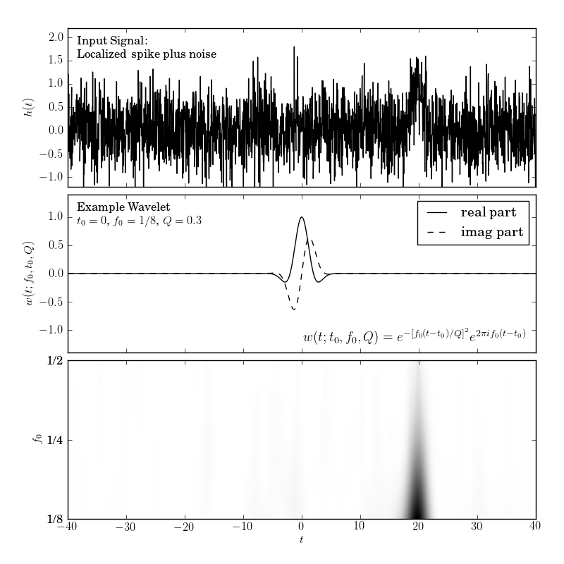

Wavelet transform of a Noisy Spike¶
Figure 10.8
Localized frequency analysis using the wavelet transform. The upper panel shows the input signal, which consists of a Gaussian spike in the presence of white (Gaussian) noise (see figure 10.10). The middle panel shows an example wavelet. The lower panel shows the power spectral density as a function of the frequency f0 and the time t0, for Q = 0.3.
{kind=link}
# Author: Jake VanderPlas
# License: BSD
# The figure produced by this code is published in the textbook
# "Statistics, Data Mining, and Machine Learning in Astronomy" (2013)
# For more information, see http://astroML.github.com
# To report a bug or issue, use the following forum:
# https://groups.google.com/forum/#!forum/astroml-general
import numpy as np
from matplotlib import pyplot as plt
from astroML.fourier import FT_continuous, IFT_continuous
#----------------------------------------------------------------------
# This function adjusts matplotlib settings for a uniform feel in the textbook.
# Note that with usetex=True, fonts are rendered with LaTeX. This may
# result in an error if LaTeX is not installed on your system. In that case,
# you can set usetex to False.
if "setup_text_plots" not in globals():
from astroML.plotting import setup_text_plots
setup_text_plots(fontsize=8, usetex=True)
def wavelet(t, t0, f0, Q):
return (np.exp(-(f0 / Q * (t - t0)) ** 2)
* np.exp(2j * np.pi * f0 * (t - t0)))
def wavelet_FT(f, t0, f0, Q):
# this is its fourier transform using
# H(f) = integral[ h(t) exp(-2pi i f t) dt]
return (np.sqrt(np.pi) * Q / f0
* np.exp(-2j * np.pi * f * t0)
* np.exp(-(np.pi * (f - f0) * Q / f0) ** 2))
def check_funcs(t0=1, f0=2, Q=3):
t = np.linspace(-5, 5, 10000)
h = wavelet(t, t0, f0, Q)
f, H = FT_continuous(t, h)
assert np.allclose(H, wavelet_FT(f, t0, f0, Q))
#------------------------------------------------------------
# Create the simulated dataset
np.random.seed(5)
t = np.linspace(-40, 40, 2001)[:-1]
h = np.exp(-0.5 * ((t - 20.) / 1.0) ** 2)
hN = h + np.random.normal(0, 0.5, size=h.shape)
#------------------------------------------------------------
# Compute the convolution via the continuous Fourier transform
# This is more exact than using the discrete transform, because
# we have an analytic expression for the FT of the wavelet.
Q = 0.3
f0 = 2 ** np.linspace(-3, -1, 100)
f, H = FT_continuous(t, hN)
W = np.conj(wavelet_FT(f, 0, f0[:, None], Q))
t, HW = IFT_continuous(f, H * W)
#------------------------------------------------------------
# Plot the results
fig = plt.figure(figsize=(5, 5))
fig.subplots_adjust(hspace=0.05, left=0.12, right=0.95, bottom=0.08, top=0.95)
# First panel: the signal
ax = fig.add_subplot(311)
ax.plot(t, hN, '-k', lw=1)
ax.text(0.02, 0.95, ("Input Signal:\n"
"Localized spike plus noise"),
ha='left', va='top', transform=ax.transAxes)
ax.set_xlim(-40, 40)
ax.set_ylim(-1.2, 2.2)
ax.xaxis.set_major_formatter(plt.NullFormatter())
ax.set_ylabel('$h(t)$')
# Second panel: the wavelet
ax = fig.add_subplot(312)
W = wavelet(t, 0, 0.125, Q)
ax.plot(t, W.real, '-k', label='real part', lw=1)
ax.plot(t, W.imag, '--k', label='imag part', lw=1)
ax.legend(loc=1)
ax.text(0.02, 0.95, ("Example Wavelet\n"
"$t_0 = 0$, $f_0=1/8$, $Q=0.3$"),
ha='left', va='top', transform=ax.transAxes)
ax.text(0.98, 0.05,
(r"$w(t; t_0, f_0, Q) = e^{-[f_0 (t - t_0) / Q]^2}"
"e^{2 \pi i f_0 (t - t_0)}$"),
ha='right', va='bottom', transform=ax.transAxes)
ax.set_xlim(-40, 40)
ax.set_ylim(-1.4, 1.4)
ax.set_ylabel('$w(t; t_0, f_0, Q)$')
ax.xaxis.set_major_formatter(plt.NullFormatter())
# Third panel: the spectrogram
ax = fig.add_subplot(313)
ax.imshow(abs(HW) ** 2, origin='lower', aspect='auto', cmap=plt.cm.binary,
extent=[t[0], t[-1], np.log2(f0)[0], np.log2(f0)[-1]])
ax.set_xlim(-40, 40)
ax.text(0.02, 0.95, ("Wavelet PSD"), color='w',
ha='left', va='top', transform=ax.transAxes)
ax.set_ylim(np.log2(f0)[0], np.log2(f0)[-1])
ax.set_xlabel('$t$')
ax.set_ylabel('$f_0$')
ax.yaxis.set_major_locator(plt.MultipleLocator(1))
ax.yaxis.set_major_formatter(plt.FuncFormatter(lambda x, *args: ("1/%i"
% (2 ** -x))))
plt.show()